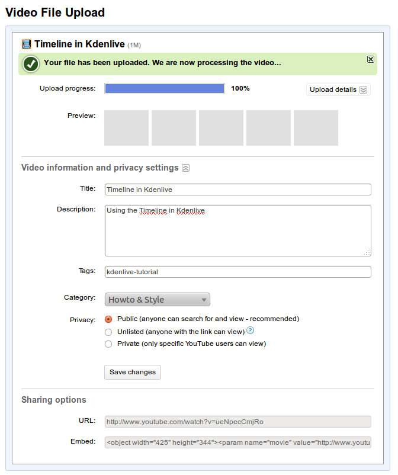

Online Video
Now that we know how to create awesome videos, we need a way to
distribute them. DVDs are nice, but they're getting old-fashioned. In
todays world, the number one method of video distribution is
online. The king of all the web-sites for video distribution is
YouTube, but there are several other sites (both for free and more
professional ones that you need to pay for) available.
YouTube will take almost any type of video (they use FFMpeg behind the
scenes) and display it on a web page for you. In addition to providing
it at the resolution you send in to them, they will automatically
create smaller copies for people with slower internet connections (or
smaller screens) to watch. The biggest limit is that YouTube only
supports videos that are up to 15 mintues long.
You need an account to upload videos YouTube (which you can create by
clicking the button at the top of the home-page). Once you have
one, click the "Upload" link on the home page. Then you can select the
file you want to upload. While your file is uploading, you can take a
minute to fill in the details about it, such as: Title, Description,
Tags, Category, and Privacy.

The title should be short, usually only a few words. The description
should be longer and describe what your video is all about. The tags
can be different words that could be used to search for your video. If
you're not sure what to put here, browse around the site and see what
other videos (similar to yours) are putting for tags. The
category is
simply selecting the best option from the list for your video.
Finally, you can set the privacy flag so that your video can be public
for the world to see, or one of the other options. That's it! Now
you're video is live for the world to see on YouTube.
There are several other free sites that work similar to YouTube: blip.tv, vimeo,
revver, metacafe, flickr, and even commons.wikimedia.com. In
addition to those sites, there are many more that offer professional,
paid, service. Finally, there are free and paid players you can
download and put into any website, allowing you to have your own video
on your web page.
All the options we've talked about so far are types of progressive
download video. In this system, you computer starts to download a file
from a web-server (just like any other file on a web-page), but the
player that is embedded in the web-page knows that after a certian
percentage of it has downloaded (based on the speed of your internet
connection) it can start playing and the rest will get there before it
reaches the end.
In addition to progressive downloads, you could have normal downloads.
In this case, the user would download a video to his/her computer, then
open it and watch it in the video player of their choice.
Similar to normal downloading, is using a tool called Bit Torrent (http://en.wikipedia.org/wiki/BitTorrent_(protocol)
http://es.wikipedia.org/wiki/BitTorrent_(protocolo) )
Ustream, Justin TV, Bit-Gravity?